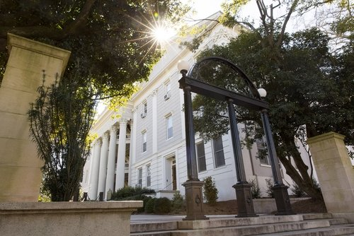
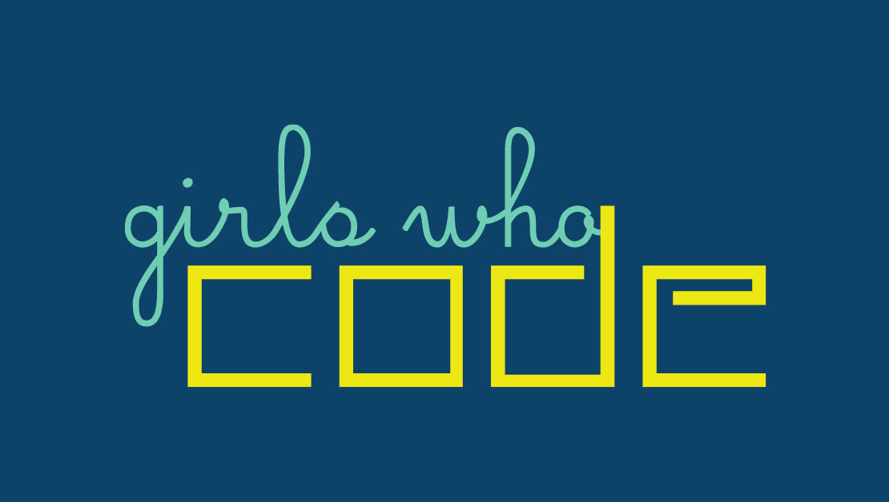
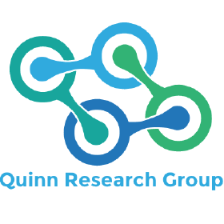
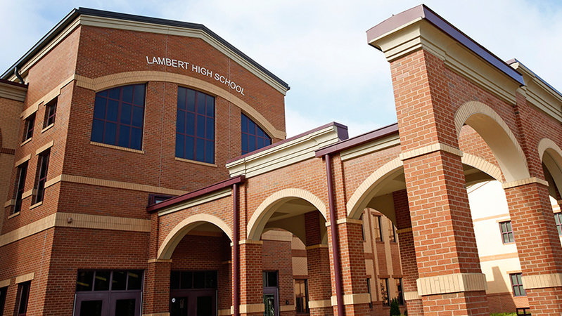

Himani Yadav.
HELLO, I'M
Himani Yadav.
Computer Science & Cognitive Science Student

About Me
Hi! I'm a rising junior at the University of Georgia. I first found an interest in code
in middle school, as I attempted to create custom CSS themes for my Tumblr page.
But, in high school, I was convinced that I wanted to be a lawyer and wanted nothing to do with STEM.
I rediscovered my passion for tech in my junior year of high school, when I joined the Girls Who Code club.
Now, with my double majors, I hope to apply knowledge from disciplines such as computer science,
linguistics, philosophy, and psychology to focus on the burgeoning field of Artificial Intelligence.
When I'm not in front of a computer, you can probably find me exploring the eats around Athens,
making music, diy-ing arts and crafts, or curled up with a good book.
Click here for a random fact about me:
Activities and Experiences

GOOGLE STEP
I'm currently developing this portfolio and brushing up on my front-end development skills.
I'm having so much fun learning about Google Shopping with my podmates and hosts.
We're working towards implementing a web application for our group's capstone project.

UNIVERSITY OF GEORGIA
I am a Computer Science and Cognitive Science major, with a Philosophy minor at UGA. UGA has given me so much, from a
from a love of learning, to a passion for social justice, to an obsession with college football. My classes, professors,
mentors and peers have all helped me think critically about who I am and what sort of impact I want to make on the
world. I am also so grateful for the Foundation Fellowship - this community has provided me the support and opportunity
to travel and study around the world, and has brought me some of my best friends.

GIRLS WHO CODE
I am the co-founder and co-president of the Girls Who Code outreach-oriented student organization
at UGA. Girls Who Code had such an impact on me when I was in high school, so when I
found that there were no similar programs in Athens-area schools, I wanted to make a difference.
We've started clubs in 3 Athens-area middle and high schools, where UGA students go to volunteer weekly
to help bridge the gender gap in STEM, especially in underpriveleged areas. We introduce girls
to coding concepts, work on a semester-long project, and help them build confidence
with technology.

QUINN RESEARCH GROUP
I am an Undergraduate Research Assistant in the Quinn Research Group in the UGA Department of Computer Science.
Our lab's focus is on computer vision, data science, and machine learning as it applies to public health.
My project specifically is neuroscience and neuroimaging. I am applying deep neural network architectures and deep
clustering algorithms to help identify markers of Parkinson's disease in brain image data, the first step in developing
an unsupervised pipeline to analyze PD progression.
NHS IMPROVEMENT
Last summer, I had the amazing opportunity to serve as a Data Analytics Intern with NHS Improvement in London, England.
I worked with R and SQL and softwares such as Tableau and Alteryx in order to prepare and analyze data
from thousands of hospitals and millions of patients. I focused on learning predictive modelling techniques
in R and creating Tableau dashboards to visualize data. My project involved communicating with client to create a medicine
safety evaluation pipeline that is now in use in hospitals around England.

LAMBERT HIGH SCHOOL
Despite having little to no clue who I was or what I wanted to do with my life, my time in high school was fulfilling and
shaped me into who I am today. My high school was huge, but I was able to find many little niches in which to spend my days.
My involvement in the choral and musical theatre programs gave me so much joy and fostered my love of the arts.
Serving as a captain and lead attorney in Mock Trial helped me find my voice. Joining the Girls Who Code club
sparked my interest in tech. And the various service organizations I participated in and led brought me a
greater understanding of the issues pervasive in my community, and what I could do to help.